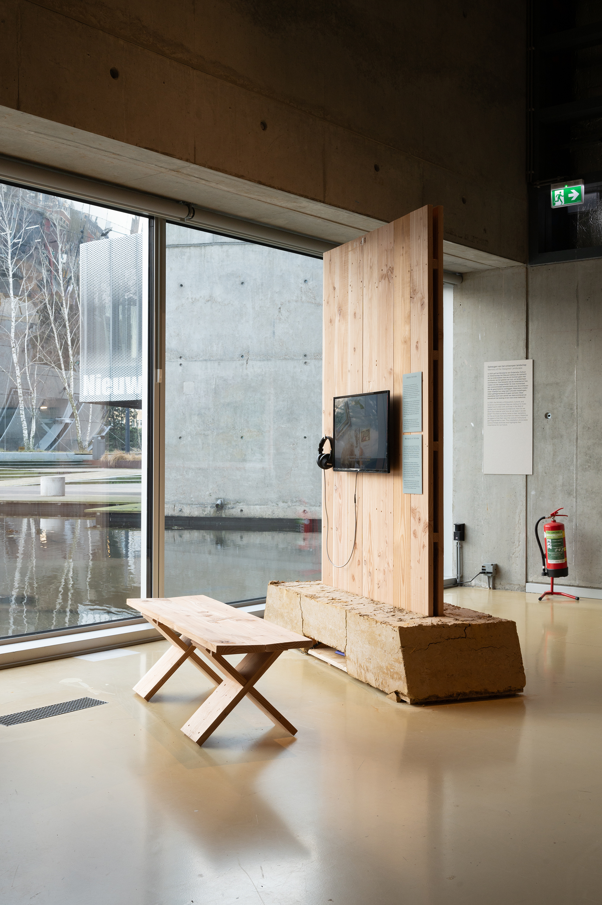
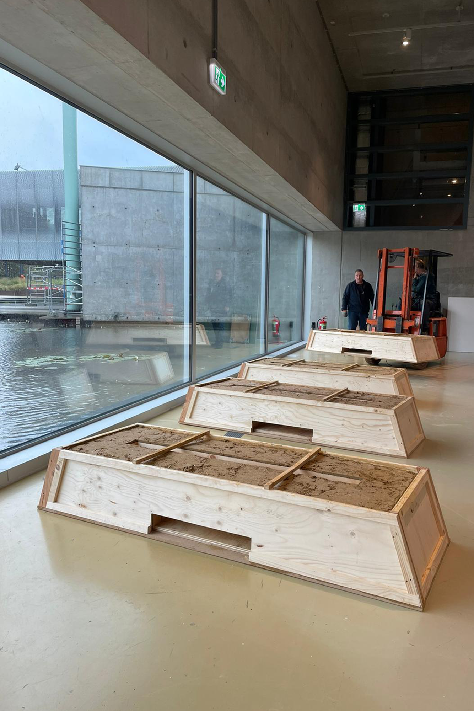
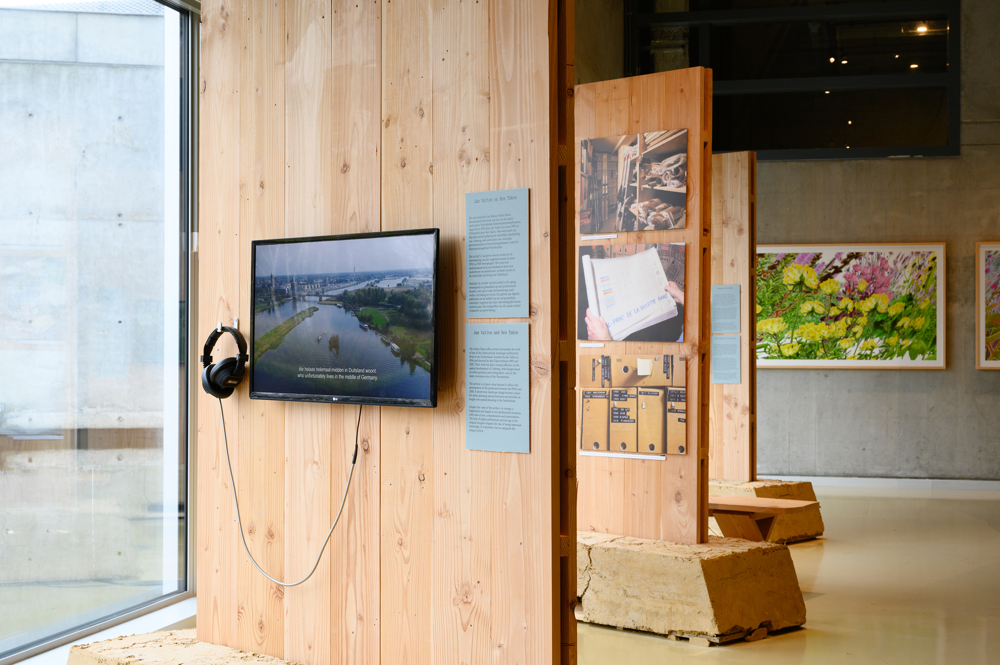
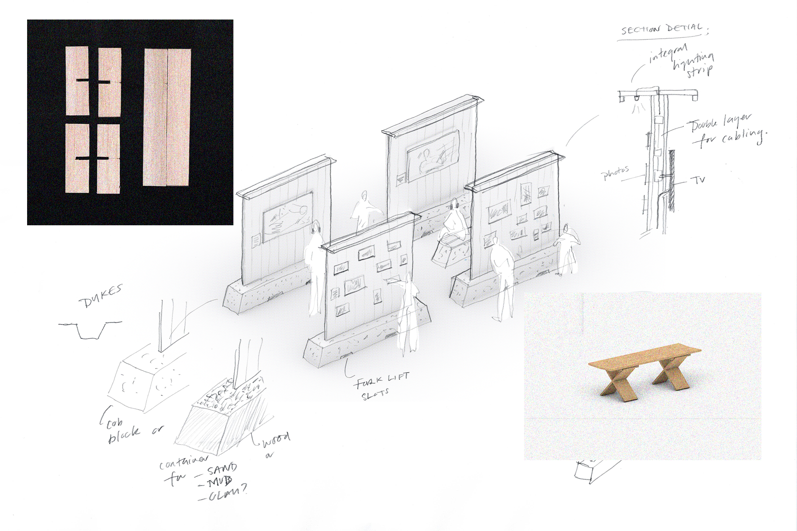
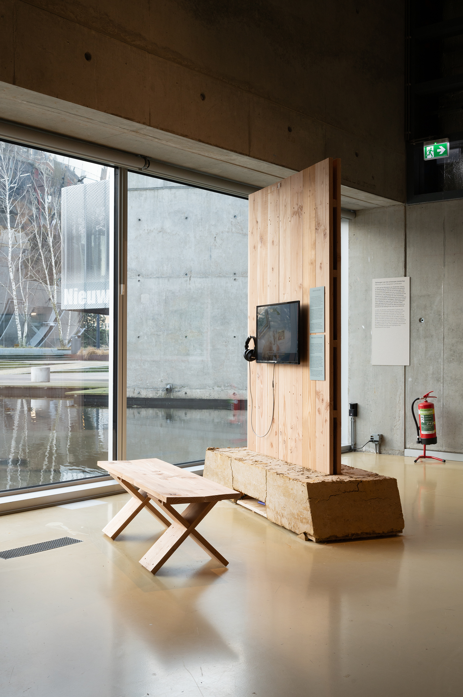
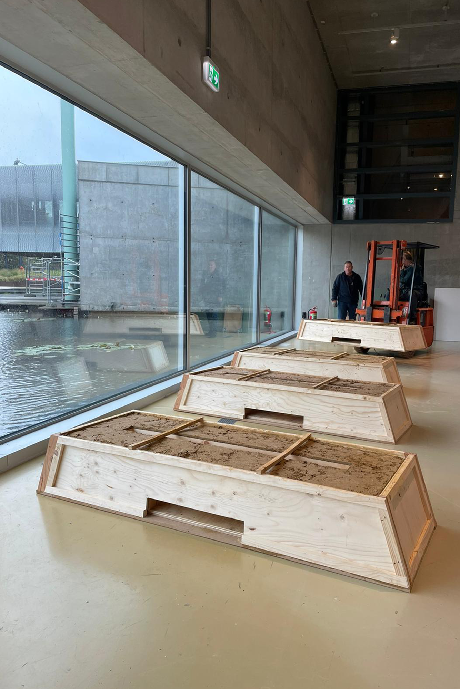
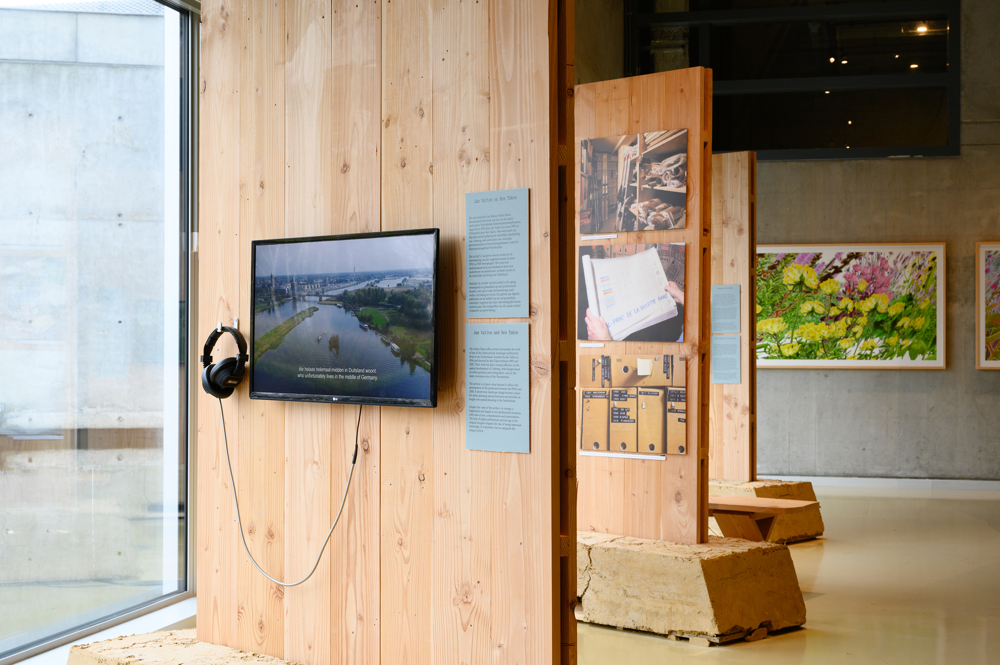
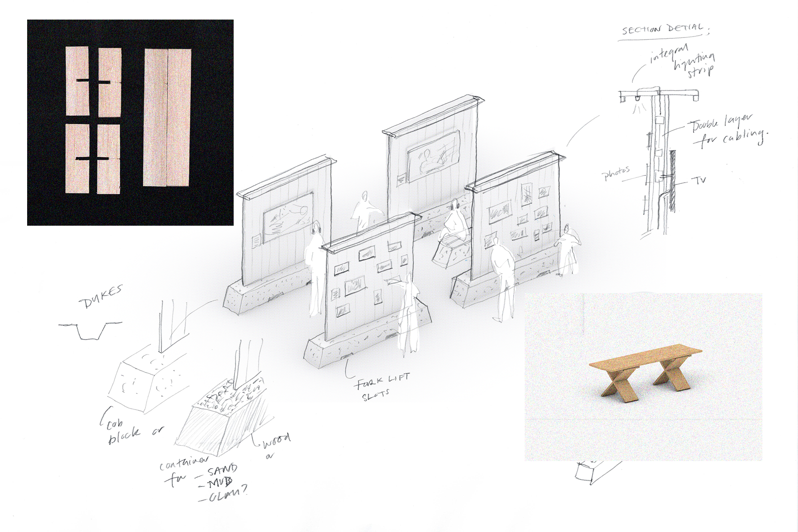
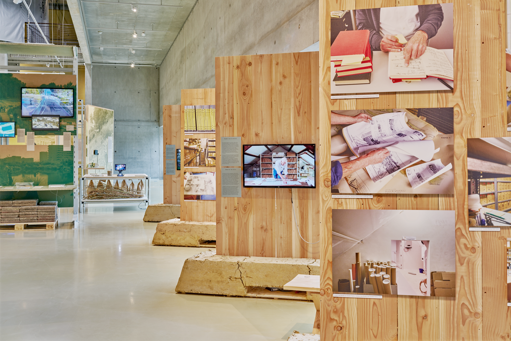
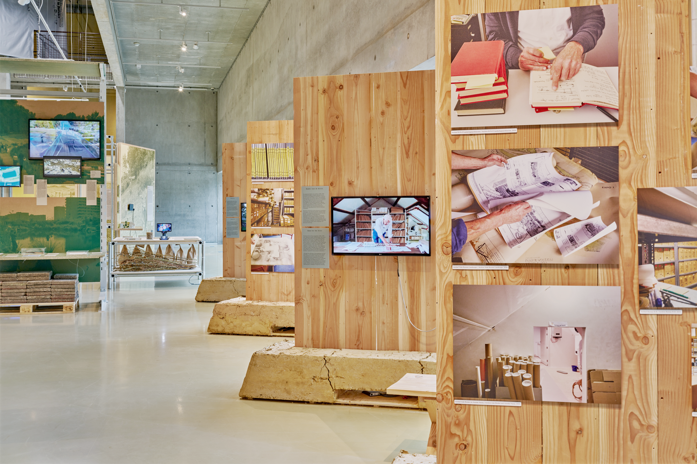

Memory of the Designed Landscape
In a country where the landscape has been predominantly shaped by human processes, the history of landscape architecture is inseparable from the history of the Netherlands. The installation design for Memory of the Designed Landscape draws inspiration from the early labourers who shaped the land by digging turf (peat) and their plaggenhut dwellings.Dyke-like in form, the ballasts supporting the display panels use an ancient building material and technique: cob (leem in Dutch). Cob is a mixture of earth (with a high clay content), sand, and straw. Unlike concrete, it can be rehydrated and returned to the landscape from which it came. The display panels themselves are crafted from Douglas fir planks salvaged from previous Nieuwe Instituut exhibitions, while the graphic panels are printed directly onto packaging materials retrieved from the Nieuwe Instituut archives.
Together, these elements form a series of display panels for the video and photography content that appear to have emerged from the Dutch landscape.
Spatial and Graphic Design, Designer
built by Bouwko, Rob den Dulk and Jack Bardwell
Photography of project images 2 and 4 by Petra-van-der-Ree
↳ Research Page
 







 
